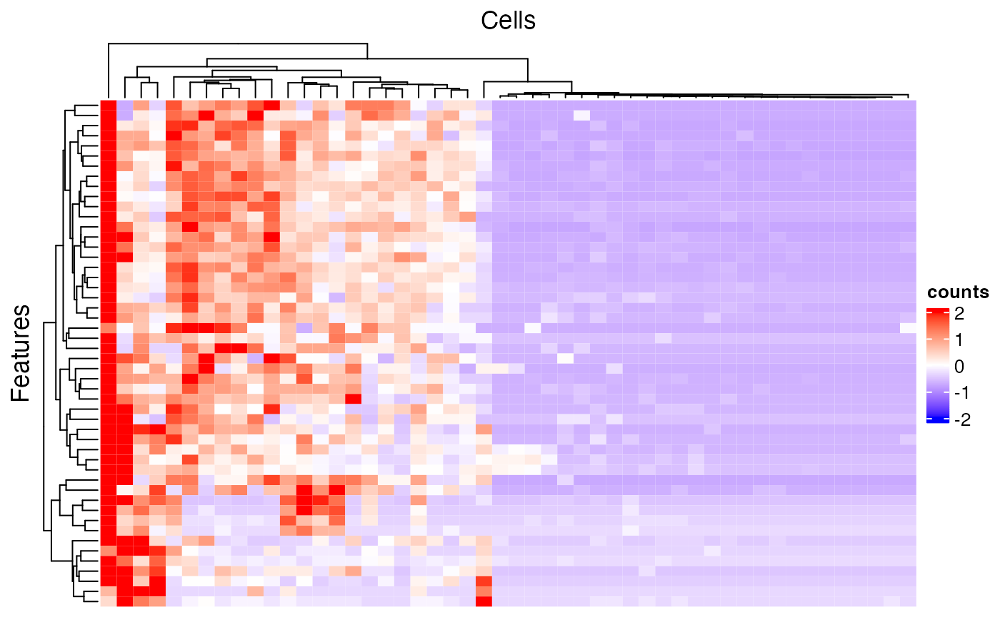
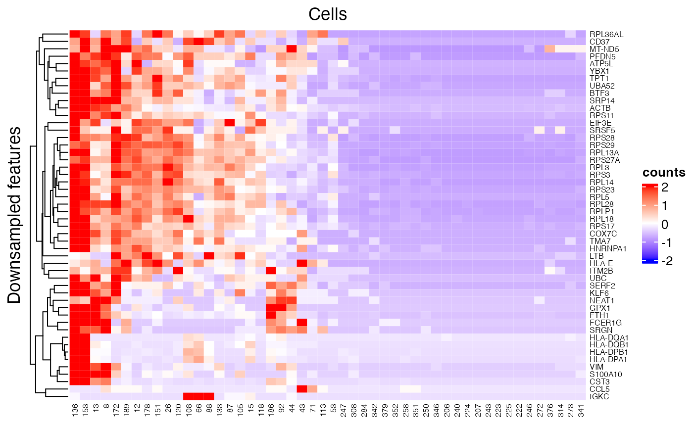

Introduction
SingleCellTK (SCTK) is equipped with a generic heatmap plotting function called plotSCEHeatmap(), which takes an SingleCellExperiment (SCE) object as the primary input. This generic function is a wrapper of ComplexHeatmap::Heatmap (Zuguang Gu and et. al., 2016). Similar to many heatmap plotting functions in other packages, we allow flexible legend strategies. Meanwhile, we support the direct use of information already saved in colData and rowData.
Examples
To present the usage of plotSCEHeatmap(), we would like to use a small example provided with SCTK.
## class: SingleCellExperiment
## dim: 200 390
## metadata(0):
## assays(1): counts
## rownames(200): ENSG00000251562 ENSG00000205542 ... ENSG00000204472
## ENSG00000133872
## rowData names(2): feature_ID feature_name
## colnames(390): pbmc_4k_GACCAATTCCTAGAAC-1 pbmc_4k_AAATGCCGTTTCGCTC-1
## ... pbmc_4k_CTGAAGTTCCACTCCA-1 pbmc_4k_CATCGAACAGCCAGAA-1
## colData names(4): cell_barcode column_name sample type
## reducedDimNames(0):
## spikeNames(0):
## altExpNames(0):The minimum setting for plotSCEHeatmap() is the input SCE object and the data matrix to plot (default "logcounts" though). In this way, all cells and features will be presented while no annotation or legend (except the main color scheme) will be shown.
plotSCEHeatmap(sce, useAssay = "counts")

Subsetting
The first way to subset the heatmap is to directly use an index vector that can subset the input SCE object to featureIndex and cellIndex, including numeric, and logical vectors, which are widely used, and character vector containing the row/col names. Of course, user can directly use a subsetted SCE object as input.
# Make up random downsampling numeric vector featureSubset <- sample(nrow(sce), 50) cellSubset <- sample(ncol(sce), 50) plotSCEHeatmap(inSCE = sce, useAssay = "counts", featureIndex = featureSubset, cellIndex = cellSubset)

In a more complexed situation, where users might only have a set of identifiers which are not inside the row/col names (i.e. unable to directly subset the SCE object), we provide another approach. The subset, in this situation, can be accessed via specifying a vector that contains the identifiers users have, to featureIndexBy or cellIndexBy. This specification allows directly giving one column name of rowData or colData.
subsetFeatureName <- sample(rowData(sce)$feature_name, 50) subsetCellBarcode <- sample(sce$cell_barcode, 50) plotSCEHeatmap(inSCE = sce, useAssay = "counts", featureIndex = subsetFeatureName, featureIndexBy = "feature_name", cellIndex = subsetCellBarcode, cellIndexBy = "cell_barcode")

Annotation
As introduced before, we allow directly using column names of rowData or colData to attach color bar annotations. To make use of this functionality, pass a character vector to rowDataName or colDataName.
# Make up arbitrary annotation, rowRandLabel <- c(rep('aa', 100), rep('bb', 100)) rowData(sce)$randLabel <- rowRandLabel colRandLabel <- c(rep('cc', 195), rep('dd', 195)) colData(sce)$randLabel <- colRandLabel plotSCEHeatmap(inSCE = sce, useAssay = "counts", featureIndex = featureSubset, cellIndex = cellSubset, rowDataName = "randLabel", colDataName = c("type", "randLabel"))

Fully customized annotation is also supported, though it can be complexed for users. For the labeling, it is more recommanded to insert the information into rowData or colData and then make use. For coloring, information should be passed to featureAnnotationColor or cellAnnotationColor. The argument must be a list object with names matching the annotation classes (such as "randLabel" and "type"); each inner object under a name must be a named vector, with colors as the values and existing categories as the names. The working instance looks like this:
## [1] "For row annotation"## $randLabel
## aa bb
## "#FF4D4D" "#4DFFFF"## [1] "For column annotation"## $sample
## pbmc_4k
## "#FF4D4D"
##
## $type
## Singlet Doublet EmptyDroplet
## "#4DFFFF" "#FFC04D" "#4D4DFF"
##
## $randLabel
## cc dd
## "#FFFF4D" "#BA4DFF"Others
In some cases, it might be better to do a semi-heatmap (i.e. split the rows/columns first and cluster them within each group) to visualize some expression pattern, such as evaluating the differential expression. For this need, use rowSplitBy or colSplitBy. Argument must be a character vector included inside what are annotated.
plotSCEHeatmap(inSCE = sce, useAssay = "counts", featureIndex = featureSubset, cellIndex = cellSubset, rowDataName = "randLabel", colDataName = c("type", "randLabel"), rowSplitBy = "randLabel", colSplitBy = "type")
Text labels of features or cells can be added via rowLabel or colLabel. Use TRUE or FALSE to specify whether to show the rownames or colnames of the subsetted SCE object. Additionally, giving a single string of a column name of rowData or colData can enable the labeling of the annotation. Furthermore, users can directly throw a character vector to the parameter, with the same length of either the full SCE object or the subsetted.
The dendrograms for features or cells can be removed by passing FALSE to rowDend or colDend.
The row title ("Genes") and column title ("Cells") can be changed or removed by passing a string or NULL to rowTitle or colTitle, respectively.
plotSCEHeatmap(inSCE = sce, useAssay = "counts", featureIndex = featureSubset, cellIndex = cellSubset, rowLabel = "feature_name", colLabel = as.character(1:50), colDend = FALSE, rowTitle = "Downsampled features")

There are still some parameters not mentioned here, but they are not frequently used. Please refer to ?plotSCEHeatmap as well as ?ComplexHeatmap::Heatmap.